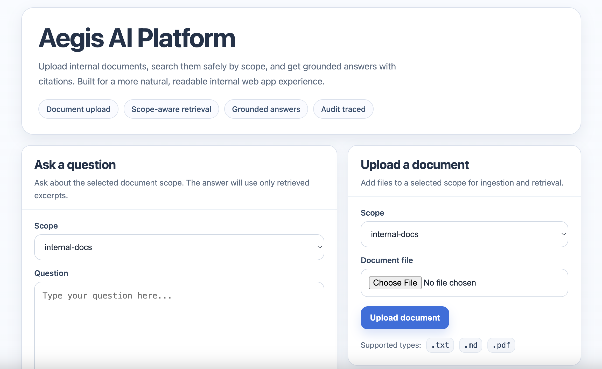

Application overview
Open live demo
The public-facing experience stays simple: upload internal documents, retrieve by scope, and produce grounded answers with citations.
Microsoft Azure • Hybrid search • Logging
Secure AI Document Retrieval
A secure AI document retrieval application built on a secure Microsoft cloud and networking backbone.

The public-facing experience stays simple: upload internal documents, retrieve by scope, and produce grounded answers with citations.
The running interface presents document upload, scoped search, grounded answers, and audit-friendly behavior without turning the site into a UI dump.
Application snapshots
The app experience stays simple for the user, but the supporting telemetry is built to show how custom detections and investigation workflows work after testing. These two Sentinel screenshots reinforce that story without overwhelming the page.

Shows how prompt-injection and content-filter testing can be reviewed in Sentinel-backed Log Analytics to validate detections and compare blocked, sanitized, and successful outcomes.

Highlights how repeated authorization denials and related request activity can be correlated across the retrieval pipeline during incident review.